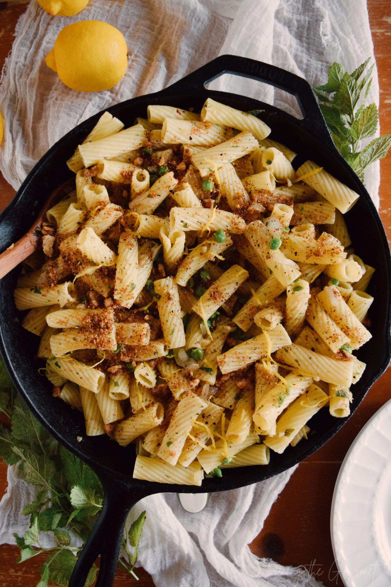

Lemon Butter Herb Pasta

A fresh, light and delicately flavored pasta dish.
Ingredients
- 4 cups bow-tie pasta
- ¼ cup butter
- ¼ cup chicken broth
- 3 tablespoons lemon juice
- ¼ teaspoon oregano
- ¼ teaspoon dried basil
- ¼ teaspoon minced garlic
- 1 pinch salt and ground black pepper to taste
Steps
-
Bring a large pot of lightly salted water to a boil. Cook pasta at a boil, stirring occasionally, until cooked
through yet firm to the bite, about 12 minutes; drain.
-
Melt butter in a saucepan over medium heat. Stir chicken broth, lemon juice, oregano, basil, and garlic into
butter. Bring to a simmer and reduce heat to medium-low; cook until thickened to your desired texture, 5 to 7
minutes.
-
Season sauce with salt and pepper. Stir cooked pasta into butter sauce to coat.